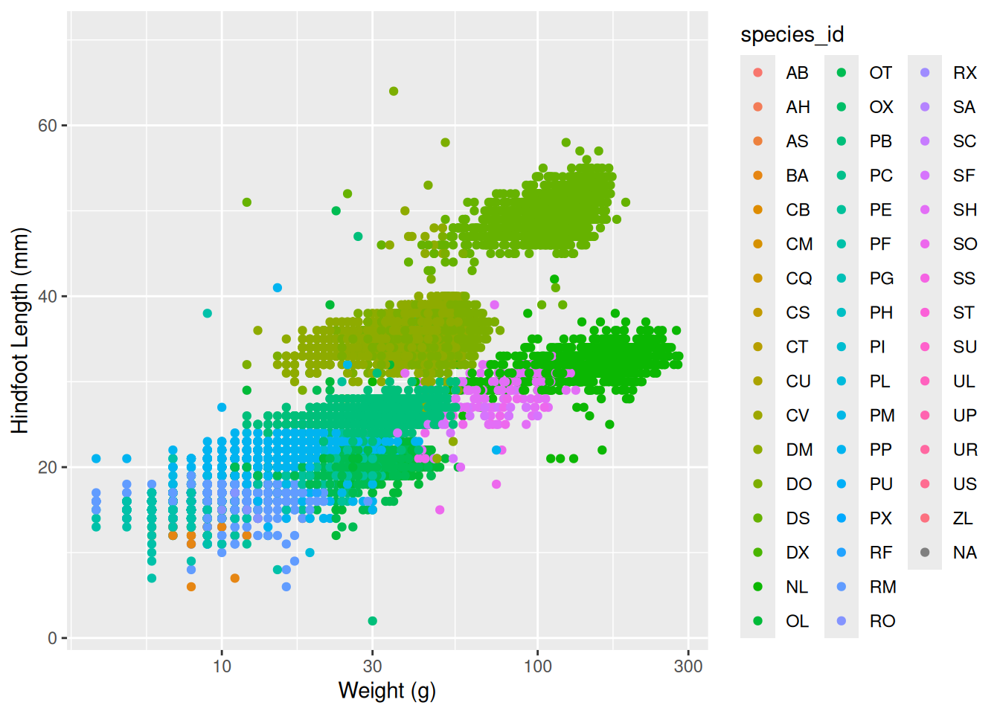
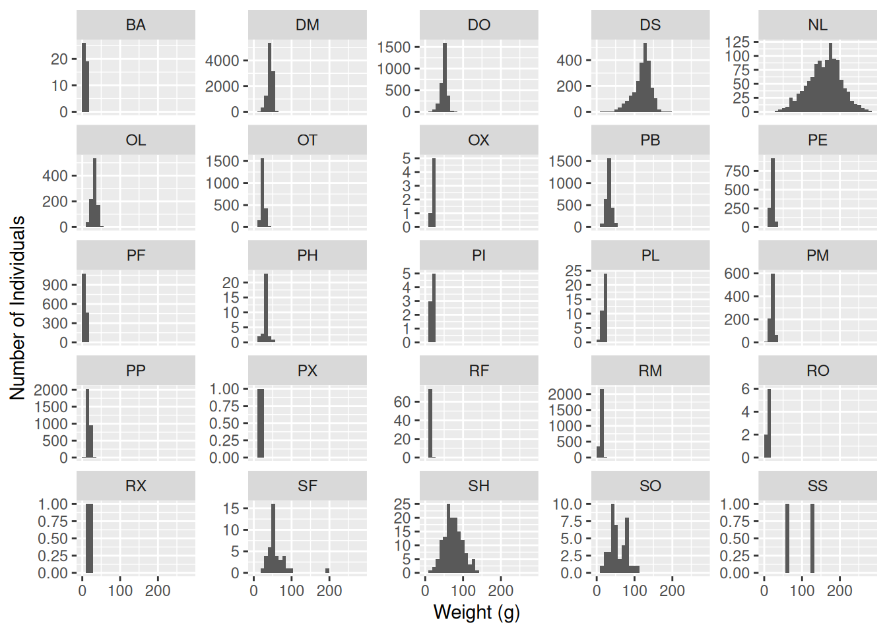
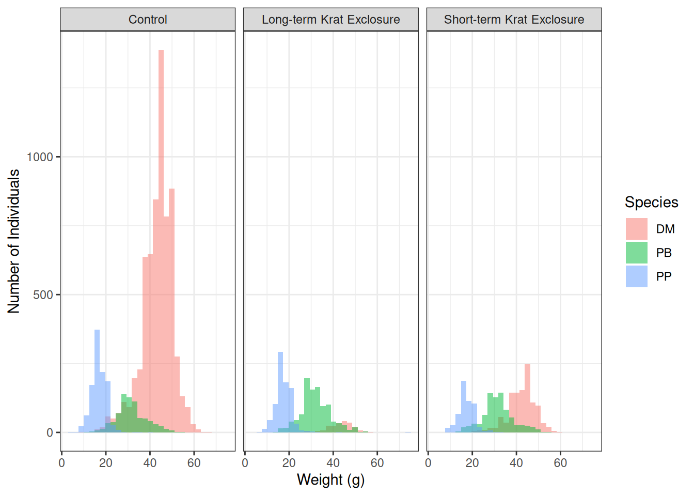

[1] "2a"# A tibble: 3,027 × 5
year month day species_id weight
<dbl> <dbl> <dbl> <chr> <dbl>
1 1977 8 19 DO 52
2 1977 10 17 DO 33
3 1977 10 17 DO 50
4 1977 10 17 DO 48
5 1977 10 17 DO 31
6 1977 10 18 DO 41
7 1977 11 12 DO 44
8 1977 11 12 DO 48
9 1977 11 14 DO 39
10 1977 12 10 DO 40
# ℹ 3,017 more rows[1] "2b"# A tibble: 5,150 × 3
year species_id hindfoot_length
<dbl> <chr> <dbl>
1 1995 PP 23
2 1995 PP 22
3 1995 PP 22
4 1995 PP 21
5 1995 PP 21
6 1995 PP 20
7 1995 PP 22
8 1995 PP 24
9 1995 PP 22
10 1995 PP 22
# ℹ 5,140 more rows[1] "2c"# A tibble: 340 × 3
# Groups: species_id [25]
species_id year mean_hf
<chr> <dbl> <dbl>
1 AH 1999 35
2 AH 2000 31
3 BA 1989 13
4 BA 1990 13.8
5 BA 1991 12.9
6 BA 1992 12
7 DM 1977 35.7
8 DM 1978 36.1
9 DM 1979 35.9
10 DM 1980 35.8
# ℹ 330 more rows[1] "2d"# A tibble: 16,167 × 5
year genus species weight plot_type
<dbl> <chr> <chr> <dbl> <chr>
1 1977 Dipodomys merriami NA Control
2 1977 Dipodomys merriami NA Rodent Exclosure
3 1977 Dipodomys merriami NA Long-term Krat Exclosure
4 1977 Dipodomys merriami NA Spectab exclosure
5 1977 Dipodomys merriami NA Spectab exclosure
6 1977 Dipodomys spectabilis NA Rodent Exclosure
7 1977 Dipodomys merriami NA Rodent Exclosure
8 1977 Dipodomys merriami NA Long-term Krat Exclosure
9 1977 Dipodomys merriami NA Control
10 1977 Dipodomys merriami NA Short-term Krat Exclosure
# ℹ 16,157 more rows[1] "2e"
[1] "2f"# A tibble: 32,283 × 9
record_id month day year plot_id species_id sex hindfoot_length weight
<dbl> <dbl> <dbl> <dbl> <dbl> <chr> <chr> <dbl> <dbl>
1 63 8 19 1977 3 DM M 35 40
2 64 8 19 1977 7 DM M 37 48
3 65 8 19 1977 4 DM F 34 29
4 66 8 19 1977 4 DM F 35 46
5 67 8 19 1977 7 DM M 35 36
6 68 8 19 1977 8 DO F 32 52
7 69 8 19 1977 2 PF M 15 8
8 70 8 19 1977 3 OX F 21 22
9 71 8 19 1977 7 DM F 36 35
10 74 8 19 1977 8 PF M 12 7
# ℹ 32,273 more rows
[1] "2g, optional"# A tibble: 13,415 × 10
record_id month day year plot_id species_id sex hindfoot_length weight
<dbl> <dbl> <dbl> <dbl> <dbl> <chr> <chr> <dbl> <dbl>
1 3 7 16 1977 2 DM F 37 NA
2 5 7 16 1977 3 DM M 35 NA
3 13 7 16 1977 3 DM M 35 NA
4 14 7 16 1977 8 DM <NA> NA NA
5 15 7 16 1977 6 DM F 36 NA
6 16 7 16 1977 4 DM F 36 NA
7 18 7 16 1977 2 PP M 22 NA
8 21 7 17 1977 14 DM F 34 NA
9 23 7 17 1977 13 DM M 36 NA
10 26 7 17 1977 15 DM M 31 NA
# ℹ 13,405 more rows
# ℹ 1 more variable: plot_type <chr>